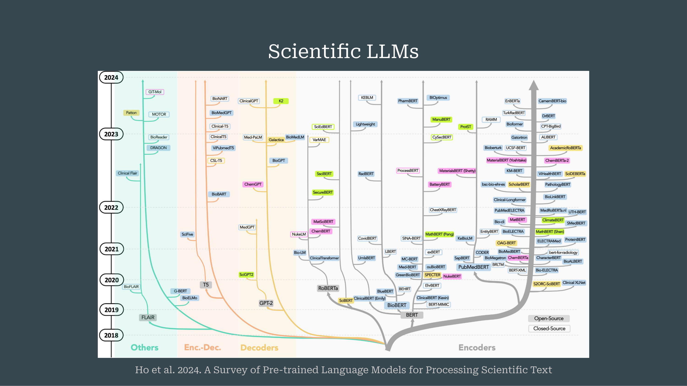
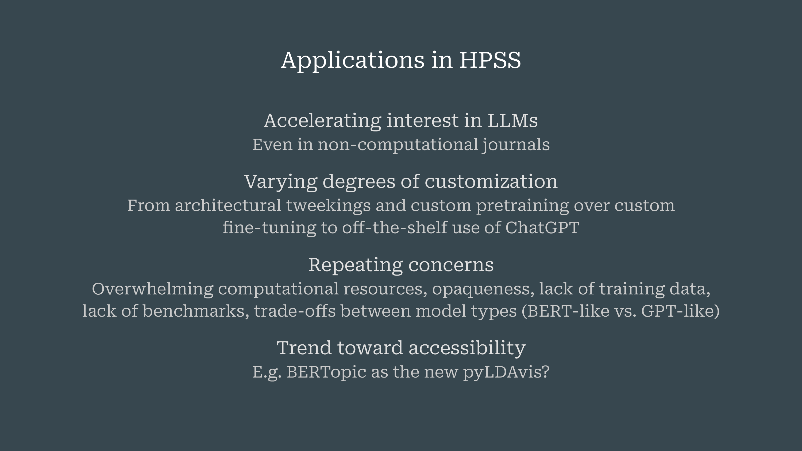

3 Large Language Models for the History, Philosophy, and Sociology of Science
Overview
The authors meticulously detail the architecture and application of Large Language Models (LLMs) within the History, Philosophy, and Sociology of Science (HPSS). They commence by providing a foundational primer on LLMs, particularly focusing on the Transformer architecture and its derivatives, BERT and GPT. The discussion then transitions to specific applications within HPSS, categorising them into data handling, knowledge structuring, dynamics, and practices. Crucially, the authors identify significant challenges inherent in adapting LLMs for HPSS research, such as the historical evolution of language and the discipline’s critical, reconstructive perspective. They advocate for enhanced LLM literacy amongst researchers, the development of shared datasets, and a steadfast adherence to HPSS methodologies whilst embracing new opportunities for bridging qualitative and quantitative approaches. The speaker highlights Retrieval Augmented Generation (RAG) as a pivotal pipeline for domain adaptation without extensive model retraining, and underscores that contemporary “agents” represent complex systems of multiple LLMs integrated with diverse tools, rather than standalone models.
3.1 Presentation Agenda and Objectives

The authors establish a clear agenda, outlining three core components: a primer on Large Language Models, an exploration of their applications within the History, Philosophy, and Sociology of Science, and a series of critical reflections intended to stimulate workshop discussions. Recognising the diverse technical backgrounds amongst the audience, the speaker prioritises delivering a concise yet comprehensive introduction to LLMs, particularly focusing on their adaptation for scientific domains. Beyond this foundational overview, the session aims to summarise existing applications within HPSS and to present key considerations for future research and engagement with these powerful tools.
3.2 The Transformer Model Architecture
At the heart of contemporary Large Language Models resides the renowned Transformer architecture, originally conceptualised by Vaswani and colleagues in their seminal 2017 paper, “Attention is All You Need”. The engineers initially designed this model for language translation tasks, such as converting German text into English. This architecture fundamentally comprises two interconnected streams: an Encoder on the left and a Decoder on the right.
The Encoder processes input words, transforming them into numerical representations. Crucially, it reads the entire input sentence at once, enabling each word to interact bidirectionally with every other word. This comprehensive interaction allows the Encoder to construct a full, contextualised representation of the sentence’s complete meaning. Conversely, the Decoder receives these encoded numerical representations and generates output words sequentially. The Decoder then feeds each produced word back into its own input, creating a loop. A key distinction lies in the Decoder’s unidirectional nature: it can only access preceding words to predict the next word, preventing it from “looking ahead” into the future. Within both the Encoder and Decoder, various layers perform complex numerical computations, progressively refining and contextualising the word embeddings.
3.3 Pre-trained Language Models: BERT

Following the introduction of the Transformer model, researchers swiftly re-engineered its individual streams to develop pre-trained language models, marking a significant shift in the field. This innovation moved beyond direct translation, focusing instead on crafting models capable of profound language comprehension and generation. These pre-trained models subsequently serve as robust foundations, requiring only minor or additional training to accomplish diverse Natural Language Processing tasks.
One prominent example is BERT, an encoder-side model that remains widely prevalent. BERT operates on the principle that every word within an input stream can interact with all other words. This bidirectional, full-contextual understanding allows the model to construct a comprehensive representation of the entire input at once.
3.4 Pre-trained Language Models: GPT and Model Distinctions

Conversely, the GPT models, or Generative Pre-trained Transformers, represent the decoder-side evolution of the Transformer architecture. These models power prominent generative AI systems such as ChatGPT. Their unidirectional structure, which permits them to consider only preceding words, enables them to generate entirely new text, a capability not inherent in BERT models. This fundamental difference delineates their primary functions: GPT models excel at producing novel language, whereas BERT-like models demonstrate superior coherence in understanding existing sentences. Beyond these two primary types, researchers have also developed models that combine encoder and decoder elements, and have even devised sophisticated methods to enable decoders to operate with encoder-like functionalities, as exemplified by models such as XLM and XLNet.
3.5 Evolution of Scientific Large Language Models

Ho and colleagues’ 2024 work, “A Survey of Pre-trained Language Models for Processing Scientific Text”, provides a comprehensive overview charting the evolution of Large Language Models from 2018 to 2024, specifically highlighting their development for scientific domains and tasks. Their intricate diagram categorises models into Encoders (typified by BERT), Decoders (typified by GPT), Encoder-Decoders, and other less common architectures. Notably, the Encoder category exhibits a far greater population of models compared to the Decoder category within scientific applications. This detailed survey identifies early influential models such as BioBERT, Specter, and Cyber. The observed proliferation of encoder models suggests their particular relevance and potential utility for researchers in the History, Philosophy, and Sociology of Science, who might either leverage these existing models or embark upon developing bespoke solutions.
3.6 Domain and Task Adaptation of Large Language Models

Adapting Large Language Models to specific scientific language necessitates several distinct training approaches. Initial pretraining, where models learn language by predicting subsequent tokens, as in GPT, or by predicting masked words, as in BERT, demands an exorbitant amount of computational power and data, rendering it largely impractical for individual researchers. A more accessible strategy involves continued pretraining, where an already pre-trained model, such as BERT, undergoes further training on domain-specific language; for instance, the speaker and Micha applied this method to physics texts.
Beyond this, researchers can implement fine-tuning by adding extra layers to pre-trained models and training them to function as classifiers for tasks like sentiment analysis or named entity recognition. Whilst prompt-based adaptation receives a brief mention, contrastive learning emerges as a pivotal method for generating sentence or document embeddings from existing word embeddings. This technique proves crucial for positioning documents and sentences within the same embedding space as individual words, thereby facilitating comparative analysis. Sentence BERT, a widely utilised model, exemplifies this approach, and its intricacies may feature in forthcoming discussions by Irina Gurevich.
3.7 Retrieval Augmented Generation (RAG) for Domain Adaptation

Retrieval Augmented Generation, or RAG, represents a sophisticated pipeline approach to domain adaptation, fundamentally differing from the direct training of a singular model. This system orchestrates the concerted action of at least two or more models, often integrating additional tools to achieve its objectives.
The process commences with retrieval: a BERT-type model encodes a user’s query, such as “What are LLMs?”, into a precise sentence embedding. Subsequently, this embedding facilitates a search within a dedicated document database, identifying and extracting the most semantically similar passages. These retrieved sentences or passages then become integral to the generation phase. Here, the system seamlessly incorporates them into the prompt of a generative model, typically a GPT-type architecture. This model then synthesises an answer, critically informed by the newly provided context. Modern generative AI systems, including current iterations of ChatGPT, extensively employ RAG for tasks such as internet searching and presenting relevant results. Crucially, this paradigm underscores a broader trend: contemporary reasoning models and “agents” are not monolithic Large Language Models but rather intricate systems that combine LLMs with a diverse array of supplementary tools.
3.8 Key Distinctions in Large Language Models

To understand Large Language Models, one must grasp several key distinctions. Firstly, their fundamental architecture and pretraining methodologies vary significantly, encompassing Encoder-based models like BERT, Decoder-based models such as GPT, and hybrid Encoder-Decoder configurations. Secondly, a diverse array of fine-tuning strategies exists, each designed to adapt these models for specific tasks. Thirdly, a critical conceptual difference lies between word embeddings and sentence embeddings; whilst both capture semantic meaning, they operate at distinct levels of abstraction. Finally, the level of abstraction itself provides a crucial categorisation, moving from individual Large Language Models to complex pipelines, exemplified by Retrieval Augmented Generation, and culminating in sophisticated agents that integrate multiple LLMs with a suite of other tools.
3.9 Applications of Large Language Models in HPSS Research

An ongoing survey systematically categorises the diverse applications of Large Language Models within History, Philosophy, and Sociology of Science research into four principal areas:
Dealing with Data and Sources: This area encompasses functionalities such as parsing and extracting specific information, including publication types, acknowledgements, and citations. It also involves more interactive engagements with sources, facilitating summarisation and RAG-type conversational interfaces.
Knowledge Structures: This category focuses on extracting entities like scientific instruments, celestial bodies, and chemicals. Furthermore, it enables the mapping of complex relationships, including disciplinary boundaries, interdisciplinary fields, and science-policy discourses.
Knowledge Dynamics: This third area sees LLMs assisting in tracing conceptual histories, exemplified by tracking terms such as “theory” within Digital Humanities or “virtual” and “Planck” in physics. This category also extends to identifying novelty, pinpointing breakthrough papers and emerging technologies.
Knowledge Practices: Finally, this area delves into the analysis of how knowledge is constructed and communicated. This includes argument reconstruction, discerning premises, conclusions, and causal links. It also encompasses citation context analysis, a long-standing HPSS tradition now frequently employed for evaluatory purposes, which determines the purpose and sentiment behind citations. Moreover, LLMs facilitate discourse analysis, identifying nuanced linguistic features such as hedge sentences, specialised jargon, and instances of boundary work.
3.10 Trends and Concerns in LLM Adoption for HPSS

The adoption of Large Language Models within academic research demonstrates an accelerating interest, extending beyond traditionally computational journals like Scientometrics and JASIST into publications not typically associated with computational methods. This expansion largely stems from the models’ potent semantic capabilities, which appeal to qualitative researchers and philosophers alike.
Researchers exhibit varying degrees of customisation in their LLM usage, ranging from straightforward, off-the-shelf applications of ChatGPT to the development of entirely new architectures and bespoke pretraining regimes. Despite this burgeoning interest, several recurring concerns persist. These include the prohibitive computational resources often required, the inherent opaqueness of model operations, a pervasive lack of suitable training data, and the absence of standardised benchmarks for evaluation. Furthermore, researchers consistently encounter trade-offs between different model types, recognising that no single model serves all purposes; rather, the selection of an adequate model remains contingent upon the specific research objective. Nevertheless, a discernible trend towards greater accessibility is emerging, exemplified by tools such as BERTopic, which offers a user-friendly and well-maintained solution for topic modelling.
3.11 Critical Reflections and Future Directions for LLMs in HPSS
Critical reflections on the integration of Large Language Models into HPSS research highlight several discipline-specific challenges. The historical evolution of concepts and language poses a significant hurdle, as LLMs are predominantly trained on contemporary language. This necessitates either the development of bespoke models or the careful application of existing ones, whilst actively mitigating inherent biases when analysing historical texts. Furthermore, HPSS researchers typically adopt a reconstructive and critically reflective perspective, reading between the lines to understand authorial context and subtle discursive strategies, such as boundary work. LLMs are not inherently trained to detect such nuances, thus demanding innovative methods to enable this deeper form of “reading.” Practical data challenges, including sparse datasets, the presence of multiple languages, and archaic scripts, further complicate their application.
To navigate these complexities, several recommendations emerge for HPSS researchers:
Cultivating LLM literacy is paramount, requiring a thorough understanding of both the theoretical underpinnings and practical implications of these tools.
Acquiring coding skills remains essential, even as NLP coding interfaces become more intuitive; this prevents the uncritical adoption of off-the-shelf tools that might yield visually appealing but ultimately uninterpretable outputs.
The development of shared datasets and standardised benchmarks is crucial for fostering collaborative progress and ensuring rigorous evaluation.
Researchers must remain steadfast in their HPSS methodologies, carefully translating disciplinary problems into NLP tasks without allowing the technical objectives of classification, generation, or summarisation to “hijack” the core research purpose.
Despite these challenges, LLMs present compelling new opportunities. They offer a unique pathway for bridging qualitative and quantitative research approaches, fostering greater methodological integration within HPSS. Moreover, these developments prompt a valuable reflection on the discipline’s own history, drawing connections to the pre-history of related methods, such as the co-word analysis pioneered by Colon and Ari Rip in the 1980s, which itself emerged from an Actor-Network Theory framework. A compelling example of LLMs’ transformative potential lies in their capacity to track the evolution of word meanings over time through contextualised word embeddings. This enables researchers to distinguish various senses of a term, such as “Planck” (referring to Max Planck, the Planck Institutes, or the Planck satellite mission), and to observe their changing dominance within historical physics archives—a feat previously unattainable without LLMs. Ultimately, these models hold the promise of addressing core STS and HPSS problems, including the nuanced understanding of paradigm shifts, from Newton’s physics to Einstein’s relativity.
3.12 Additional Visual Materials
The following slides provide supplementary visual information that complements the main presentation content:
3.12.1 Slide 02

This slide presents the agenda for the presentation, titled ‘Today’s Menu’. The main sections outlined are: ‘Primer on LLMs’, ‘Applications in HPSS’ (History, Philosophy, and Sociology of Science), and ‘Reflections’. The visual is a chalkboard, reinforcing the ‘menu’ theme.
3.12.2 Slide 08

This slide offers a comprehensive comparison of BERT and GPT models within the context of the Transformer architecture. On the left, the ‘BERT’ model is shown as ‘bidirectional full-context’, associated with the ‘Encoder’ part of the Transformer. On the right, a new ‘GPT’ block is introduced, described as ‘unidirectional generative’ and associated with the ‘Decoder’. Both BERT and GPT blocks include ‘LLMs for HPSS ?’ and ‘Vocab’ labels. The central Transformer model architecture remains fully visible. Three citations are present: ‘Devlin et al. 2018. BERT: Pre-training of…’, ‘Vaswani et al. 2017: Attention is all you need’, and ‘Radford et al. 2018. Improving Language…’. This slide appears to be the complete version of the model comparison.
3.12.3 Slide 13

This slide outlines key distinctions related to Large Language Models. It presents four main categories:
Architecture/Pretraining, distinguishing between ‘Encoder-based vs. Decoder-based vs. Encoder-Decoder-based’ models.
Fine-tuning, noting ‘Various strategies’.
Embeddings, differentiating between ‘Word vs. Sentence’ embeddings.
Level of abstraction, comparing ‘LLMs vs. Pipelines vs. Agents’.
This slide provides a structured overview of important conceptual differences in the field of LLMs.
3.12.4 Slide 14

This slide details applications in HPSS (History, Philosophy, and Sociology of Science). It categorises applications into four areas:
Dealing with data and sources, including ‘Parsing and extracting (publication types, acknowledgements, citations)’ and ‘Interacting with sources (summarization, RAG-type chatting)’.
Knowledge structures, covering ‘Entity extraction (scientific instruments, celestial bodies, chemicals)’ and ‘Mappings (disciplines, interdisciplinary fields, science-policy discourses)’.
Knowledge dynamics, with ‘Conceptual histories (’theory’ in DH, ‘virtual’ and ‘Planck’ in physics)’ and ‘Novelty (breakthrough papers, emerging technologies)’.
Knowledge practices, which includes ‘Argument reconstruction (premises & conclusions, causality)’, ‘Citation context analysis (purpose, sentiment)’, and ‘Discourse analysis (hedge sentences, jargon, boundary work)’.
This slide provides concrete examples of how LLMs can be applied in HPSS research.
3.12.5 Slide 15

This slide continues the discussion on applications in HPSS, focusing on broader trends and challenges. It notes accelerating interest in LLMs, even in non-computational journals. It highlights varying degrees of customisation, ranging ‘From architectural tweakings and custom pretraining over custom fine-tuning to off-the-shelf use of ChatGPT’. The slide also addresses repeating concerns such as ‘Overwhelming computational resources, opaqueness, lack of training data, lack of benchmarks, trade-offs between model types (BERT-like vs. GPT-like)’. Finally, it points to a trend toward accessibility, exemplified by ‘BERTopic as the new pyLDAvis?’. This slide provides a critical perspective on the adoption and challenges of LLMs in HPSS.
3.12.6 Slide 16

This slide presents reflections on the use of LLMs in HPSS. It identifies three key areas:
Acknowledging HPSS-specific challenges, including ‘Historical evolution of concepts and language’, ‘Reconstructive perspective, reading between the lines, reflecting social implications’, and ‘Sparse data, multiple languages, old scripts, lack of digitalization’.
Building LLM literacy, which involves familiarising with ‘LLMs, NLP, and DL, both tools and theory’, learning ‘what’s the right architecture and training for our problems’, and developing ‘our own shared datasets and benchmarks’.
Staying true to HPSS methodologies, by translating ‘HPSS problems into NLP tasks without losing our focus’, exploring ‘New opportunities for bridging qualitative and quantitative approaches’, and reflecting on ‘HPSS’ own role in LLM pre-history (e.g. co-word analysis)’.
This slide offers a forward-looking and critical summary of the integration of LLMs into HPSS.